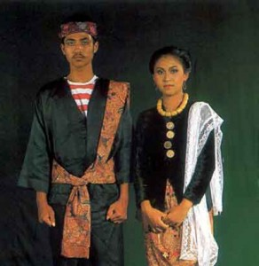

|
|  |
 |
 |
Pakaian Adat Bangka Belitung
Pakaian pengantin tradisional Bangka Belitung biasa disebut dengan nama “Paksian”. Pengantin perempuan biasanya memakai baju kurung berwarna merah yang berbahan kain sutra. Kepala mempelai wanita biasanya memakai mahkota yang biasa disebut dengan nama Paksian. Sedangkan pengantin pria menggunakan Sorban atau yang biasa disebut masyarakat Bangka Belitung sebagai Sungkon.

Pakaian Adat Bangka Belitung
Web Designer: Albert Soerjonoto, E-mail: albertsoerjonoto98@yahoo.com